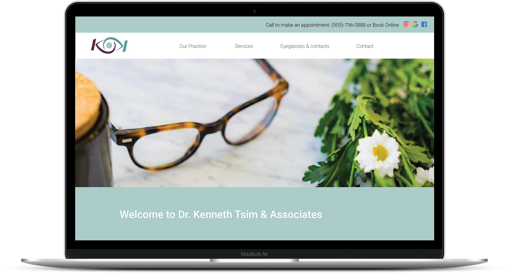

Dr. Tsim & Associates
The Opportunity
Before deciding to go back to school for Multimedia Design and Development, I worked at an Optometrist office for a few years.
The medical field was a passion of mine for a while, but I always felt like something was missing. Working on this project was
a great medley of both of my skills. Combining both my knowledge of design and optometry really helped the design process run
very smoothly.
Dr. Kenneth Tsim & Associates have been in business for over 11 years and have established themselves within their community. Shocking enough their current website was as old as the business! Upon viewing the website it was very clear that it needed revamping. This project consisted of planning and executing the website from scratch.
Dr. Kenneth Tsim & Associates have been in business for over 11 years and have established themselves within their community. Shocking enough their current website was as old as the business! Upon viewing the website it was very clear that it needed revamping. This project consisted of planning and executing the website from scratch.
Audience and Target
The audience and target market would be new potential patients. Very few individuals use the
phone book nowadays, so where do they go to find a new doctor or clinic? They tend to go on Google and
search for doctors around their area. A website can either make you or break you because that is the
patient's first impression they have of your business. The secondary target market would be returning
patients because they can book their appointments directly on the website.
The Design
When first meeting with the clients they definitely wanted to update their website while still keeping true to
their brand and professionalism. For the new website I wanted to make the design simple and easy to
use while still focusing on key aspects of the business. The original design included a great deal
of text; however, as a designer I informed the clients that the user is most likely not going to read
all that text (unless they want to know that information). In the new design, there is a bit of text
which I made very brief in order for the user to not feel like they were bombarded by information. Keeping
in mind that the typography had to be clear and large enough that even elderly patients could read it.
Feedback
When having clients who are not sure what they truly want and are giving you free reign of their website
it was really important for me to have an iterative design. Each decision was discussed and tested Before
incorporating the improvements on the final design. I created prototypes and using Adobe XD, in order for
the client to test out the user flow.
The Details
After hearing the client's constructive feedback I made the necessary adjustments to improve the website.
By transforming the initial design to the final design based on the brand guideline and integrate the
feedback to the process.
Client: Kenneth Tsim & Associates